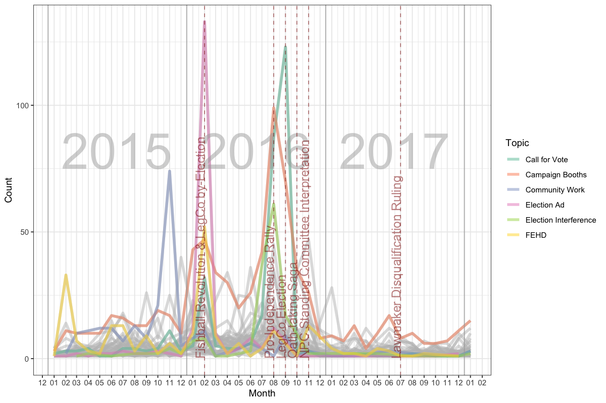
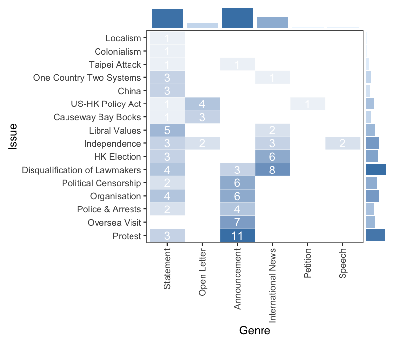

Data Analysis and Visualization with R (Ecology Curriculum)
Justin Chun-ting Ho
University of Edinburgh
A graph from my PhD...
Another graph from my PhD...
My previous life...

(Illustration of me learning R)
If I can do it, you can do it too.
Time for more R
Tidyverse

Grammar of Graphics